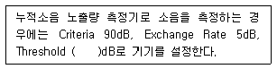
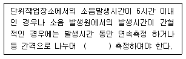
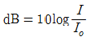
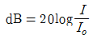
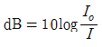
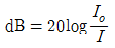

산업위생관리기사 (2015-08-16 기출문제)
1과목: 산업위생학개론
1. 미국산업위생학회(AIHA)에서 정한 산업위생의 정의로 가장 적절한 설명은?
- 국민의 육체적 건강을 최고도로 증진시키는 것이다.
- 지역주민에게 질병, 건강장애를 유발하고 안녕을 위협하는 인자를 관리하는 것이다.
- 근로자와 지역주민들에게 건강장애와 불쾌감을 초래하는 작업환경요인을 측정하여 관리하는 것이다.
- 지역주민과 근로자에게 심각한 불쾌감과 비능률을 초래하는 스트레스를 인지하는 것이다.
(정답률: 88%)

2. 미국산업위생학회 등에서 산업위생전문가들이 지켜야 할 윤리강령을 채택한 바 있는데 다음 중 전문가로서의 책임에 해당하는 것이다.
- 일반 대중에 관한 사항은 정직하게 발표한다.
- 위험요소와 예방조치에 관하여 근로자와 상담한다.
- 성실성과 학문적 실력면에서 최고 수준을 유지한다.
- 신뢰를 존중하여 정직하게 권고하고, 결과와 개선점을 정확히 보고한다.
(정답률: 81%)
3. 산업안전보건법령에서 정하는 중대재해라고 볼 수 없는 것은?
- 사망자가 1명 이상 발생한 재해
- 3개월 이상의 요양을 요하는 부상자가 동시에 2명 이상 발생한 재해
- 6개월 이상의 요양을 요하는 부상자가 동시에 1명 이상 발생한 재해
- 부상자 또는 직업성질병자가 동시에 10명 이상 발생한 재해
(정답률: 84%)
4. 다음 중 직업성 질환 발생의 직접적인 원인이라고 할 수 없는 것은?
- 물리적 환경요인
- 화학적 환경요인
- 작업강도와 작업시간적 요인
- 부자연스런 자세와 단순 반복 작업 등의 작업요인
(정답률: 59%)
5. 다음 중 인간공학에서 고려해야 할 인간의 특성과 가장 거리가 먼 것은?
- 감각과 지각
- 운동력과 근력
- 감정과 생산능력
- 기술, 집단에 대한 적응능력
(정답률: 72%)
6. 산업안전보건법령상 밀폐공간 작업으로 인한 건강장해 예방을 위하여 “적정한 공기”의 조성 조건으로 옳은 것은?
- 산소농도가 28% 이상 21% 미만, 탄산가스 농도가 1.5% 미만, 황화수소 농도가 10ppm미만 수준의 공기
- 산소농도가 16% 이상 23.5% 미만, 탄산가스 농도가 3%미만, 황화수소 농도가 5ppm 미만 수준의 공기
- 산소농도가 18% 이상 21% 미만, 탄산가스 농도가 1.5% 미만, 황화수소 농도가 5ppm 미만 수준의 공기
- 산소농도가 18% 이상 23.5% 미만, 탄산가스 농도가 1.5% 미만, 황화수소 농도가 10ppm 미만 수준의 공기
(정답률: 81%)
7. 다음 중 직업성 질환의 범위에 대한 설명으로 틀린 것은?
- 직업상 업무에 기인하여 1차적으로 발생하는 원발성 질환은 제외한다.
- 원발성 질환과 합병 작용하여 제2의 질환을 유발하는 경우를 포함한다.
- 합병증이 원발성 질환과 불가분의 관계를 가지는 경우를 포함한다.
- 원발성 질환에 떨어진 다른 부위에 같은 원인에 의한 제2의 질환을 일으키는 경우를 포함한다.
(정답률: 83%)
8. 산업안전보건법상 용어의 정의에서 산업재해를 예방하기 위하여 잠재적 위험성을 발견하고 그 개선대책을 수립할 목적으로 고용노동부장관이 지정하는 자가 하는 조사 · 평가를 무엇이라 하는가?
- 위험성평가
- 안전 · 보건진단
- 작업환경측정 · 평가
- 유해성 · 위험성조사
(정답률: 82%)
9. 다음 중 피로를 가장 적게 하고, 생산량을 최고로 올릴 수 있는 경제적인 작업속도를 무엇이라 하는가?
- 완속속도
- 지적속도
- 감각속도
- 민감속도
(정답률: 85%)
10. 다음 중 하인리히의 사고연쇄반응 이론(도미노 이론)에서 사고가 발생하기 바로 직전의 단계에 해당하는 것은?
- 개인적 결함
- 사회적 환경
- 선진 기술의 미적용
- 불안전한 행동 및 상태
(정답률: 89%)
11. 미국산업위생전문가협의회(ACGIH)에서 1일 8시간 및 1주일 40시간의 평균농도로 거의 모든 근로자가 나쁜 영향을 받지 않고 노출될 수 있는 농도를 어떻게 표기하는가?
- MAC
- TLV-TWA
- Ceiling
- TLV-STEL
(정답률: 87%)
12. 다음 중 실내공기의 오염에 따른 건강상의 영향을 나타내는 용어와 가장 거리가 먼 것은?
- 새차증후군
- 화학물질과민증
- 헌집증후군
- 스티븐슨존슨 증후군
(정답률: 80%)
13. 다음 중 산업피로의 증상에 대한 설명으로 틀린 것은?
- 혈당치가 높아지고 젖산, 탄산이 증가한다.
- 호흡이 빨라지고 혈액 중 CO2의 양이 증가한다.
- 체온은 처음에 높아지다가 피로가 심해지면 나중에 떨어진다.
- 혈압은 처음에 높아지나 피로가 진행되면 나중에 오히려 떨어진다.
(정답률: 62%)
14. 다음 중 사무직 근로자가 건강장해를 호소하는 경우 사무실 공기관리 상태를 평가하기 위해 사업주가 실시해야 하는 조사방법과 가장 거리가 먼 것은?
- 사무실 조명의 조도 조사
- 외부의 오염물질 유입경로의 조사
- 공기정화시설의 환기량이 적정한 가를조사
- 근로자가 호소하는 증상(호흡기, 눈, 피부, 자극 등)에 대한 조사
(정답률: 79%)
15. 다음 중 교대근무와 보건관리에 관한 내용으로 가장 적합하지 않은 것은?
- 야간근무의 연속은 2~3일 정도가 좋다.
- 2교대는 최저 3조의 정원을, 3교대면 4조의 정원으로 편성한다.
- 야근 후 다음 교대반으로 가는 간격은 최저 12시간을 가지도록 하여야 한다.
- 채용 후 건강관리로서 정기적으로 체중, 위장 증상 등을 기록해야 하며 체중이 3kg이상 감소 시 정밀검사를 받도록 한다.
(정답률: 78%)
16. 18세기 영국의 외과의사 Pott에 의해 직업성 암(癌)으로 보고되었고, 오늘날 검댕 속에 다환방향족 탄화수소가 원인인 것으로 밝혀진 지병은?
- 폐암
- 음낭암
- 방광암
- 중피종
(정답률: 91%)
17. 다음 중 최대 작업영역에 대한 설명으로 옳은 것은?
- 상지를 뻗쳐서 닿는 작업영역
- 전박을 뻗쳐서 닿는 작업영역
- 사지를 뻗쳐서 닿는 작업영역
- 상체를 최대한 뻗쳐서 닿는 작업영역
(정답률: 83%)
18. 다음 중 스트레스에 관한 설명으로 잘못된 것은?
- 위협적인 환경 특성에 대한 개인의 반응이다.
- 스트레스가 아주 없거나 너무 많을 때에는 역기능 스트레스로 작용한다.
- 환경의 요구가 개인의 능력 한계를 벗어날 때 발생하는 개인의 환경과의 불균형 상태이다.
- 스트레스를 지속적으로 받게 되면 인체는 자기조절 능력을 발휘하여 스트레스로부터 벗어난다.
(정답률: 85%)
19. 중량물 취급과 관련하여 요통 발생에 관여하는 요인으로 가장 관계가 적은 것은?
- 근로자의 심리상태 및 조건
- 작업습관과 개인적인 생활태도
- 요통 및 기타 장애(자동차 사고, 넘어짐)의 경력
- 물리적 환경요인(작업빈도, 물체 위치 · 무게 및 크기)
(정답률: 82%)
20. 어떤 사업장에서 500명의 근로자가 1년 동안 작업하던 중 재해가 50건 발생하였으며 이로 인해 총근로시간 중 5%의 손실이 발생하였다면 이 사업장의 도수율은 약 얼마인가? (단, 근로자는 1일 8시간씩 연간 300일을 근무하였다.)
- 14
- 24
- 34
- 44
(정답률: 76%)
2과목: 작업위생측정 및 평가
21. 흡착제에 대한 설명으로 틀린 것은?
- 실리카 및 알루미나계 흡착제는 그 표면에서 물과 같은 극성분자를 선택적으로 흡착한다.
- 흡착제의 선정은 대개 극성오염물질이면 극성흡착제를, 비극성오염물질이면 비극성 흡착제를 사용하나 반드시 그러하지는 않다.
- 활성탄은 다른 흡착제에 비하여 큰 비표면적을 갖고 있다.
- 활성탄은 탄소의 불포화결합을 가진 분자를 선택적으로 흡착한다.
(정답률: 46%)
22. 작업장 기본특성 파악을 위한 예비조사 내용 중 유사노출그룹(HEG) 설정에 관한 설명으로 가장 거리가 먼 것은?
- 역학조사를 수행 시 사건이 발생된 근로자와 다른 노출그룹의 노출농도를 근거로 사건이 발생된 노출농도의 추정에 유용하며, 지역시료 채취만 인정된다.
- 조직, 공정, 작업범주 그리고 공정과 작업내용별로 구분하여 설정한다.
- 모든 근로자를 유사한 노출그룹별로 구분하고 그룹별로 대표적인 근로자를 선택하여 측정하면 측정하지 않은 근로자의 노출농도까지도 추정할 수 있다.
- 유사노출그룹 설정을 위한 목적 중 시료채취수를 경제적으로 하기 위함도 있다.
(정답률: 75%)
23. 일정한 온도조건에서 부피와 압력은 반비례한다는 표준 가스 법칙은?
- 보일의 법칙
- 샤를의 법칙
- 게이-루삭의 법칙
- 라울트의 법칙
(정답률: 83%)
24. 작업환경공기중 벤젠(TLV 10ppm)이 5ppm, 톨루엔(TLV 100ppm)이 50ppm 및 크실렌(TLV 100ppm)이 60 ppm으로 공존하고 있다고 하면 혼합물의 허용농도는? (단, 상가작용 기준)
- 78ppm
- 72ppm
- 68ppm
- 64ppm
(정답률: 64%)
25. 활성탄관을 연결한 저유량 공기 시료채취펌프를 이용하여 벤젠증기(MW = 78g/mol)을 0.038m3채취하였다. GC를 이용하여 분석한 결과 478μg의 벤젠이 검출되었다면 벤젠 증기의 농도(ppm)는? (단, 온도 25℃, 1기압 기준, 기타 조건 고려 안함)
- 1.87
- 2.34
- 3.94
- 4.78
(정답률: 52%)
26. 먼지 채취시 사이클론이 충돌기에 비해 갖는 장점이라 볼 수 없는 것은?
- 사용이 간편하고 경제적이다.
- 호흡성 먼지에 대한 자료를 쉽게 얻을 수 있다.
- 입자의 질량 크기 분포를 얻을 수 있다.
- 매체의 코팅과 같은 별도의 특별한 처리가 필요 없다.
(정답률: 43%)
27. 다음은 작업장 소음측정에 관한 내용이다. ( )안에 내용으로 옳은 것은? (단, 고용노동부 고시 기준)

- 50
- 60
- 70
- 80
(정답률: 90%)
28. 3000mL의 0.004M의 황산용액을 만들려고 한다. 5M 황산을 이용할 경우 몇 mL가 필요한가?
- 5.6mL
- 4.8mL
- 3.1mL
- 2.4mL
(정답률: 59%)
29. 흡광광도법에서 사용되는 흡수셀의 재질 가운데 자외선 영역의 파장범위에 사용되는 재질은?
- 유리
- 석영
- 플라스틱
- 유리와 플라스틱
(정답률: 68%)
30. 검지관의 장단점으로 틀린 것은?
- 민감도가 낮으며 비교적 고농도에 적용이 가능하다.
- 측정대상물질의 동정이 미리 되어 있지 않아도 측정이 가능하다.
- 색이 시간에 따라 변화하므로 제조자가 정한 시간에 읽어야 한다.
- 특이도가 낮다. 즉, 다른 방해물질의 영향을 받기 쉬워 오차가 크다.
(정답률: 85%)
31. 세 개의 소음원의 소음 수준을 한 지점에서 각각 측정해보니 첫 번째 소음원만 가동될 때 88dB, 두 번째 소음원만 가동될 때 86dB, 세 번째 소음원만이 가동될 때 91dB이었다. 세 개의 소음원이 동시에 가동될 때 그 지점에서의 음압수준은?
- 91.6dB
- 93.6dB
- 95.4dB
- 100.2dB
(정답률: 75%)
32. 입자상 물질인 흄(fume)에 관한 설명으로 옳지 않은 것은?
- 용접공정에서 흄이 발생한다.
- 흄의 입자크기는 먼지보다 매우 커 폐포에 쉽게 도달되지 않는다.
- 흄은 상온에서 고체상태의 물질이 고온으로 액체화된 다음 증기화되고, 증기물의 응축 및 산화로 생기는 고체상의 미립자이다.
- 용접 흄은 용접공폐의 원인이 된다.
(정답률: 84%)
33. 먼지의 한쪽 끝 가장자리와 다른 쪽 끝 가장자리 사이의 거리로 과대평가될 가능성이 있는 입자성 물질의 직경은?
- 마틴 직경
- 페레트 직경
- 공기역학 직경
- 등면적 직경
(정답률: 68%)
34. 수동식 시료채취기(Passive Sampler)로 8시간 동안 벤젠을 포집하였다. 포집된 시료를 GC를 이용하여 분석한 결과 20000ng이었으며 공시료는 0ng이었다. 회사에서 제시한 벤젠의 시료채취량은 35.6mL/분이고 탈착효율은 0.96이라면 공기 중 농도는 몇 ppm인가? (단, 벤젠의 분자량은 78, 25℃, 1기압 기준)
- 0.38
- 1.22
- 5.87
- 10.57
(정답률: 39%)
35. Hexane의 부분압이 100mgHg(OEL 500ppm)이었을 때 VHRHexane은?(오류 신고가 접수된 문제입니다. 반드시 정답과 해설을 확인하시기 바랍니다.)
- 212.5
- 226.3
- 247.2
- 263.2
(정답률: 60%)
36. 유리규산을 채취하여 X-선 회절법으로 분석하는데 적절하고 6가 크롬 그리고 아연산화물의 채취에 이용하며 수분에 영향이 크지 않아 공해성 먼지, 총 먼지 등의 중량분석을 위한 측정에 사용하는 막 여과지로 가장 적합한 것은?
- MCE 막여과지
- PVC 막여과지
- PTFE 막여과지
- 은 막여과지
(정답률: 73%)
37. 펌프유량 보정기구 중에서 1차 표준기구(Primary standards)로 사용하는 Pitot tube에 대한 설명에서 맞는 것은?
- Pitot tube의 정확성에는 한계가 있으며, 기류가 12.7m/s 이상일 때는 U자 튜브를 이용하고, 그 이하에서는 기울어진 튜브(inclined tube)를 이용한다.
- Pitot tube를 이용하여 곧바로 기류를 측정할 수 있다.
- Pitot tube를 이용하여 총압과 속도압을 구하여 정압을 계산한다.
- 속도압이 25mmH2O일 때 기류속도는 28.58m/s이다.
(정답률: 49%)
38. 다음은 작업환경측정방법 중 소음측정시간 및 횟수에 관한 내용이다. ( )안에 알맞은 것은?

- 2회이상
- 3회이상
- 4회이상
- 6회이상
(정답률: 81%)
39. 파과현상(breakthrough)에 영향을 미치는 요인이라고 볼 수 없는 것은?
- 포집대상인 작업장의 온도
- 탈착에 사용하는 용매의 종류
- 포집을 끝마친 후부터 분석까지의 시간
- 포집된 오염물질의 종류
(정답률: 48%)
40. 어느 작업장에서 Toluene의 농도를 측정한 결과 23.2ppm, 21.6ppm, 22.4ppm, 24.1ppm, 22.7ppm을 각각 얻었다. 기하평균 농도(ppm)는?
- 22.8
- 23.3
- 23.6
- 23.9
(정답률: 76%)
3과목: 작업환경관리대책
41. 고열 발생원에 대한 공학적 대책 방법 중 대류에 의한 열흡수 경감법이 아닌 것은?
- 방열
- 일반환기
- 국소환기
- 차열판 설치
(정답률: 64%)
42. 차광 보호크림의 적용화학물질로 가장 알맞게 짝지어진 것은?
- 글리세린,산화제이철
- 벤드나이드, 탄산 마그네슘
- 밀랍 이산화티탄, 염화비닐수지
- 탈수라노린, 스테아린산
(정답률: 63%)
43. 유해물질을 관리하기 위해 전체 환기를 적용할 수 있는 일반적인 상황과 가장 거리가 먼 것은?
- 작업자가 근무하는 장소로부터 오염발생원이 멀리 떨어져 있는 경우
- 오염발생원의 이동성이 없는 경우
- 동일작업장에 다수의 오염발생원이 분산되어 있는 경우
- 소량의 오염물질이 일정속도로 작업장으로 배출되는 경우
(정답률: 75%)
44. 일정장소에 설치되어 있는 콤프레셔나 압축공기실린더에서 호흡할 수 있는 공기를 보호구 안면부에 연결된 관을 통하여 공급하는 호흡용 보호기 중 폐력식에 관한 내용으로 가장 거리가 먼 것은?
- 누설가능성이 없다.
- 보호구 안에 음압이 생긴다.
- demand식이라고도 한다.
- 레귤레이터를 착용자가 호흡할 때 발생하는 압력에 따라 공기가 공급된다.
(정답률: 56%)
45. 송풍량(Q)이 300m3/min일 때 송풍기의 회전속도는 150RPM이었다. 송풍량을 500m3/min으로 확대시킬 경우 같은 송풍기의 회전속도는 대략 몇 RPM이 되는가? (단, 기타 조건은 같다고 가정함)
- 약 200RPM
- 약 250RPM
- 약 300RPM
- 약 350RPM
(정답률: 65%)
46. 비중량이 1.255kgf/m3인 공기가 20m/s의 속도로 덕트를 통과하고 있을 때의 동압은?
- 15mmH2O
- 20mmH2O
- 25mmH2O
- 30mmH2O
(정답률: 65%)
47. 귀 덮개와 비교하여 귀마개를 사용하기에 적합한 환경이 아닌 것은?
- 덥고 습한 환경에서 사용할 때
- 장시간 사용할 때
- 간헐적 소음에 노출될 때
- 다른 보호구와 동시 사용할 때
(정답률: 73%)
48. 페인트 도장이나 농약 살포와 같이 공기 중에 가스 및 증기상 물질과 분진이 동시에 존재하는 경우 호흡 보호구에 이용되는 가장 적절한 공기 정화기는?
- 필터
- 요오드를 입힌 활성탄
- 금속산화물을 도포한 활성탄
- 만능형 캐니스터
(정답률: 71%)
49. 강제환기를 실시할 때 따라야 하는 원칙으로 옳지 않은 것은?
- 배출공기를 보충하기 위하여 청정공기를 공급한다.
- 공기배출구와 근로자의 작업위치 사이에 오염원이 위치하지 않도록 한다.
- 오염물질 배출구는 가능한 한 오염원으로부터 가까운 곳에 설치하여 점 환기의 효과를 얻는다.
- 공기가 배출되면서 오염장소를 통과하도록 공기배출구와 유입구의 위치를 선정한다.
(정답률: 79%)
50. 풍량 2m3/sec, 송풍기 유효전압 100mmH2O, 송풍기의 효율이 75%인 송풍기의 소요동력은?
- 2.6kW
- 3.8kW
- 4.4kW
- 5.3kW
(정답률: 60%)
51. 다음은 직관의 압력손실에 관한 설명이다. 잘못된 것은?
- 직관의 마찰계수에 비례한다.
- 직관의 길이에 비례한다.
- 직관의 직경에 비례한다.
- 속도(관내유속)의 제곱에 비례한다.
(정답률: 67%)
52. 공기 온도가 50℃인 덕트의 유속이 4m/sec일 때, 이를 표준 공기로 보정한 유속(Vc)은 얼마인가? (단, 밀도 1.2kg/m3)
- 3.19m/sec
- 4.19m/sec
- 5.19m/sec
- 6.19m/sec
(정답률: 40%)
53. 차음보호구에 대한 다음의 설명사항 중에서 알맞지 않은 것은?
- Ear plug는 외청도가 이상이 없는 경우에만 사용이 가능하다.
- Ear plug의 차음효과는 일반적으로 Ear muff보다 좋고, 개인차가 적다.
- Ear muff는 일반적으로 저음의 차음효과는 20dB, 고음역의 차음효과는 45dB이상을 갖는다.
- Ear muff는 Ear plug에 비하여 고온 작업장에서 착용하기가 어렵다.
(정답률: 73%)
54. 작업환경 관리에서 유해인자의 제거, 저감을 위한 공학적 대책으로 옳지 않은 것은?
- 보온재로 석면 대신 유리섬유나 암면 등의 사용
- 소음 저감을 위해 너트/볼트작업 대신 리벳팅(ribet) 사용
- 광물을 채취할 때 건식공정 대신 습식공정의 사용
- 주물공정에서 실리카 모래 대신 그린(green) 모래의 사용
(정답률: 73%)
55. 작업환경의 관리원칙인 대치 개선 방법으로 옳지 않은 것은?
- 성냥 제조시 황린 대신 적린을 사용함
- 세탁시 화재 예방을 위해 석유 나프타 대신 퍼클로로에틸렌을 사용함
- 땜질한 납을 oscillating-type sander로 깎던 것을 고속회전 그라인더를 이용함
- 분말로 출하되는 원료를 고형상태의 원료로 출하함
(정답률: 68%)
56. 벤젠 2kg이 모두 증발하였다면 벤젠이 차지하는 부피는? (단, 벤젠 비중 0.88, 분자량 78, 21℃ 1기압)
- 약 521L
- 약 618L
- 약 736L
- 약 871L
(정답률: 46%)
57. 어떤 작업장에서 메틸알코올(비중 0.792, 분자량 32.04)이 시간당 1.0L 증발되어 공기를 오염시키고 있다. 여유 계수 K값은 3이고, 허용ㅇ\기준 TLV는 200ppm이라면 이 작업장을 전체 환기시키는데 요구되는 필요환기량은? (단, 1기압, 21℃ 기준)
- 120m3/min
- 150m3/min
- 180m3/min
- 210m3/min
(정답률: 55%)
58. 국소배기장치설계의 순서로 가장 알맞은 것은?
- 소요풍량계산 – 반송속도 결정 – 후드형식선정 – 제어속도결정
- 제어속도결정 – 소요풍량계산 – 반송속도결정 – 후드형식선정
- 후드형식선정 – 제어속도결정 – 소요풍량계산 – 반송속도결정
- 반송속도결정 – 후드형식선정 – 제어속도결정 – 소요풍량계산
(정답률: 72%)
59. 사이클론 집진장치에서 발생하는 블로우 다운(Blow down)효과에 관한 설명으로 옳은 것은?
- 유효 원심력을 감소시켜 선회기류의 흐트러짐을 방지한다.
- 관내 분진부착으로 인한 장치의 폐쇄현상을 방지한다.
- 부분적 난류 증가로 집진된 입자가 재비산된다.
- 처리배기량의 50% 정도가 재 유입되는 현상이다.
(정답률: 53%)
60. 폭과 길이의 비(종횡비, W/L)가 0.2이하인 슬롯형 후드의 경우, 배풍량은 다음 중 어느 공식에 의해서 산출하는 것이 가장 적절하겠는가? (단, 플렌지가 부착되지 않았음, L :길이, W : 폭, X : 오염원에서 후드 개구부까지의 거리, V : 제어속도, 단위는 적절하다고 가정함)
- Q = 2.6LVX
- Q = 3.7LVX
- Q = 4.3LVX
- Q = 5.2LVX
(정답률: 60%)
4과목: 물리적유해인자관리
61. 다음 중 조명시의 고려사항으로 광원으로부터의 직접적인 눈부심을 없애기 위한 방법으로 가장 적당하지 않은 것은?
- 광원 또는 전등의 휘도를 줄인다.
- 광원을 시선에서 멀리 위치시킨다.
- 광원 주위를 어둡게 하여 광도비를 높인다.
- 눈이 부신 물체와 시선과의 각을 크게 한다.
(정답률: 74%)
62. 수심 40m에서 작업을 할 때 작업자가 받는 절대압은 어느 정도인가?
- 3기압
- 4기압
- 5기압
- 6기압
(정답률: 62%)
63. 다음 중 1루멘의 빛이 1 ft2의 평면상에 수직 방향으로 비칠 때 그 평면의 빛 밝기를 무엇이라고 하는가?
- 1 Lux
- 1 candela
- 1 촉광
- 1 foot candle
(정답률: 73%)
64. 소음계(Sound Level Meter)로 소음측정 시 A 및 C 특성으로 측정하였다. 만약 C 특성으로 측정한 값이 A 특성으로 측정한 값보다 훨씬 크다면 소음의 주파수영역은 어떻게 추정이 되겠는가?
- 저주파수가 주성분이다.
- 중주파수가 주성분이다.
- 고주파수가 주성분이다.
- 중 및 고주파수가 주성분이다.
(정답률: 65%)
65. 다음 중 이상기압의 영향으로 발생되는 고공성 폐수종에 관한 설명으로 틀린 것은?
- 어른보다 아이들에게서 많이 발생된다.
- 고공 순화된 사람이 해면에 돌아올 때에도 흔히 일어난다.
- 산소공급과 해면 귀환으로 급속히 소실되며, 증세는 반복해서 발병하는 경향이 있다.
- 진해성 기침과 호흡곤란이 나타나고 폐동맥 혈압이 급격히 낮아져 구토, 실신 등이 발생한다.
(정답률: 45%)
66. 다음 중 진동에 대한 설명으로 틀린 것은?
- 전신진동에 노출시에는 산소소비량과 폐환기량이 감소한다.
- 60~90Hz 정도에서는 안구의 공명현상으로 시력장해가 온다.
- 수직과 수평진동이 동시에 가해지면 2배의 자각현상이 나타난다.
- 전신진동의 경우 3Hz 이하에서는 급성적 증상으로 상복부의 통증과 팽만감 및 구토 등이 있을 수 있다.
(정답률: 53%)
67. 다음 중 감압병 예방을 위한 이상기압 환경에 대한 대책으로 적절하지 않은 것은?
- 작업시간을 제한한다.
- 가급적 빨리 감압시킨다.
- 순환기에 이상이 있는 사람은 취업 또는 작업을 제한한다.
- 고압환경에서 작업시 헬륨-산소혼합가스 등으로 대체하여 이용한다.
(정답률: 84%)
68. 다음 중 한랭환경으로 인하여 발생되거나 악화되는 질병과 가장 거리가 먼 것은?
- 동상(Frostbite)
- 지단자람증(Acrocyanosis)
- 케이슨병(Caisson disease)
- 레이노드씨 병(Raynaud’s disease)
(정답률: 61%)
69. 전리방사선 방어의 궁극적 목적은 가능한 한 방사선에 불필요하게 노출되는 것을 최소화 하는 데 있다. 국제방사선방호위원회(ICRP)가 노출을 최소화하기 위해 정한 원칙 3가지에 해당하지 않는 것은?
- 작업의 최적화
- 작업의 다양성
- 작업의 정당성
- 개개인의 노출량의 한계
(정답률: 61%)
70. 다음 중 피부 투과력이 가장 큰 것은?
- α선
- β선
- X선
- 레이저
(정답률: 76%)
71. 옥내의 작업장소에서 습구흑구온도를 측정한 결과 자연습구온도가 28도, 흑구온도는 30도, 건구온도는 25도를 나타내었다. 이 때 습구흑구온도지수(WBFT)는 약 얼마인가?
- 31.5℃
- 29.4℃
- 28.6℃
- 28.1℃
(정답률: 77%)
72. 다음 중 자외선의 인체내 작용에 대한 설명과 가장 거리가 먼 것은?
- 홍반은 250mm 이하에서 노출시 가장 강한 영향을 준다.
- 자외선 노출에 의한 가장 심각한 만성영향은 피부암이다.
- 280 ~ 320nm에서는 비타민 D의 생성이 활발해진다.
- 254 ~ 280nm에서 강한 살균작용을 나타낸다.
(정답률: 62%)
73. 다음 중 국소진동으로 인한 장해를 예방하기 위한 작업자에 대한 대책으로 가장 적절하지 않은 것은?
- 작업자는 공구의 손잡이를 세게 잡고 있어야 한다.
- 14℃ 이하의 옥외작업에서는 보온대책이 필요하다.
- 가능한 공구를 기계적으로 지지(支持)해주어야 한다.
- 진동공구를 사용하는 작업은 1일 2시간을 초과하지 말아야 한다.
(정답률: 78%)
74. 다음 중 소음의 크기를 나타내는데 사용되는 단위로서 음향출력, 음의 세기 및 음압 등의 양을 비교하는 무차원의 단위인 dB을 나타내는 것은? (단, I0 = 기준음향의 세기, I = 발생음의 세기를 나타낸다.)




(정답률: 69%)
75. 환경온도를 감각온도로 표시한 것을 지적온도라 하는데 다음 중 3가지 관점에 따른 지적온도로 볼 수 없는 것은?
- 주관적 지적온도
- 생리적 지적온도
- 생산적 지적온도
- 개별적 지적온도
(정답률: 56%)
76. 다음 중 산소결핍의 위험이 가장 적은 작업장소는?
- 실내에서 전기 용접을 실시하는 작업장소
- 장기간 사용하지 않은 우물 내부의 작업 장소
- 장기간 밀폐된 보일러 탱크 내부의 작업 장소
- 물품 저장을 위한 지하실 내부의 청소 작업 장소
(정답률: 72%)
77. 다음 중 Tesla(T)는 무엇을 나타내는 단위인가?
- 전계강도
- 자장강도
- 전리밀도
- 자속밀도
(정답률: 56%)
78. 다음 중 소음성 난청에 관한 설명으로 틀린 것은?
- 소음성 난청의 초기 증상을 C5-dip현상이라 한다.
- 소음성 난청은 대체로 노인성 난청과 연령별 청력변화가 같다.
- 소음성 난청은 대부분 양측성이며, 감각 신경성 난청에 속한다.
- 소음성 난청은 주로 주파수 4000Hz 영역에서 시작하여 전영역으로 파급된다.
(정답률: 75%)
79. 지상에서 음력이 10W인 소음원으로부터 10m 떨어진 곳의 음압수준은 약 얼마인가? (단, 음속은 344.4m/s, 공기의 밀도는 1.18kg/m3이다.)(오류 신고가 접수된 문제입니다. 반드시 정답과 해설을 확인하시기 바랍니다.)
- 96dB
- 99dB
- 102dB
- 1⑤dB
(정답률: 38%)
80. 가로 10m, 세로 7m, 높이 4m인 작업장의 흡음율이 바닥은 0.1, 천정은 0.2, 벽은 0.15이다. 이 방의 평균 흡음율은 얼마인가?
- 0.10
- 0.15
- 0.20
- 0.25
(정답률: 54%)
5과목: 산업독성학
81. 다음 중 카드뮴에 관한 설명으로 틀린 것은?
- 카드뮴은 부드럽고 연성이 있는 금속으로 납광물이나 아연광물을 제련할 때 부산물로 얻어진다.
- 흡수된 카드뮴은 혈장단백질과 결합하여 최종적으로 신장에 축적된다.
- 인체 내에서 철을 필요로 하는 효소와의 결합반응으로 독성을 나타낸다.
- 카드뮴 흄이나 먼지에 급성 노출되면 호흡기가 손상되며 사망에 이르기도 한다.
(정답률: 52%)
82. 다음 중 전향적 코호트 역학연구와 후향적 코호트연구의 가장 큰 차이점은?
- 질병 종류
- 유해인자 종류
- 질병 발생률
- 연구개시 시점과 기간
(정답률: 72%)
83. 주요 원인 물질은 혼합물질이며, 건축업, 도자기 작업장, 채석장, 석재공장 등의 작업장에서 근무하는 근로자에게 발생할 수 있는 진폐증은?
- 석면폐증
- 용접공폐증
- 철폐증
- 규폐증
(정답률: 73%)
84. 다음 중 급성 중독자에게 활성탄과 하제를 투여하고 구토를 유발시키며, 확진되면 Dimercaprol로 치료를 시작하려는 유해물질은? (단, 쇼크의 치료는 강력한 정맥 수액제와 혈압상승제를 사용한다.)
- 납(Pb)
- 크롬(Cr)
- 비소(As)
- 카드뮴(Cd)
(정답률: 54%)
85. 화학물질의 상호작용인 길항작용 중 배분적 길항작용에 대하여 가장 적절히 설명한 것은?
- 두 물질이 생체에서 서로 반대되는 생리적 기능을 갖는 관계로 동시에 투여한 경우
- 두 물질을 동시에 투여하였을 때 상호반응에 의하여 독성이 감소되는 경우
- 독성물질의 생체과정인 흡수, 분포, 생전환, 배설 등의 변화를 일으켜 독성이 낮아지는 경우
- 두 물질이 생체 내에서 같은 수용체에 결합하는 관계로 동시 투여시 경쟁관계로 인하여 독성이 감소되는 경우
(정답률: 54%)
86. 다음 중 피부에 묻었을 경우 피부를 강하게 자극하고, 피부로부터 흡수되어 간장장해 등의 중독증상을 일으키는 유해화학물질은?
- 납(Lead)
- 헵탄(Heptane)
- 아세톤(Acetone)
- DMF(Dimethylformamide)
(정답률: 63%)
87. 다음 중 천연가스, 석유정제산업, 지하석탄광업 등을 통해서 노출되며, 중추신경의 억제와 후각의 마비 증상을 유발하며, 치료로는 100% O2를 투여하는 등의 조치가 필요한 물질은?
- 암모니아
- 포스겐
- 오존
- 황화수소
(정답률: 58%)
88. 다음 중 납중독의 주요 증상에 포함되지 않는 것은?
- 혈중의 methallothionein 증가
- 적혈구내 protoporphyrin 증가
- 혈색소량 저하
- 혈청내 철 증가
(정답률: 63%)
89. 공기 중 일산화탄소 농도가 10mg/m3인 작업장에서 1일 8시간동안 작업하는 근로자가 흡입하는 일산화탄소의 양은 몇 mg인가? (단, 근로자의 시간당 평균 흡기량은 1250L이다.)
- 10
- 50
- 100
- 500
(정답률: 57%)
90. 다음 중 단순 질식제에 해당하는 것은?
- 수소가스
- 염소가스
- 불소가스
- 암모니아가스
(정답률: 78%)
91. 다음 중 유해화학물질에 노출되었을 때 간장이 표적장기가 되는 주요 이유로 가장 거리가 먼 것은?
- 간장은 각종 대사효소가 집중적으로 분포되어 있고, 이들 효소활동에 의해 다양한 대사 물질이 만들어지지 때문에 다른 기관에 비해 독성물질의 노출가능성이 매우 높다.
- 간장은 대정맥을 통하여 소화기계로부터 혈액을 공급받기 때문에 소화기관을 통하여 흡수된 독성물질의 이차표적이된다.
- 간장은 정상적인 생활에서도 여러 가지 복잡한 생화학 반응 등 매우 복잡한 기능을 수행함에 따라 기능의 손상가능성이 매우 높다.
- 혈액의 흐름이 매우 풍부하기 때문에 혈액을 통해서 쉽게 침투가 가능하다.
(정답률: 61%)
92. 다음 중 “Cholinesterase”효소를 억압하여 신경증상을 나타내는 것은?
- 중금속화합물
- 유기인제
- 파라쿼트
- 비소화합물
(정답률: 49%)
93. 다음 중 유해인자의 노출에 대한 생물학적 모니터링을 하는 방법과 가장 거리가 먼 것은?
- 유해인자의 공기 중 농도 측정
- 표적분자에 실제 활성인 화학물질에 대한 측정
- 건강상 악영향을 초래하지 않은 내재용량의 측정
- 근로자의 체액에서 화학물질이나 대사산물의 측정
(정답률: 58%)
94. 다음 중 화학물질의 노출기준에서 근로자가 1일 작업시간동안 잠시라도 노출되어서는 아니 되는 기준을 나타낸 것은?
- TLV-C
- TLV-skin
- TLV-TWA
- TLV-STEL
(정답률: 84%)
95. 벤젠 노출근로자에게 생물학적 모니터링을 하기 위하여 소변시료를 확보하였다. 다음 중 분석해야 하는 대사산물로 옳은 것은?
- 마뇨산(hippuric acid)
- t,t-뮤코닉산(t,t-Muconic acid)
- 메틸마뇨산(Methylhippuric acid)
- 트리클로로아세트산(trichloroacetic acid)
(정답률: 65%)
96. 다음 중 작업장에서 일반적으로 금속에 대한 노출 경로를 설명한 것으로 틀린 것은?
- 대부분 피부를 통해서 흡수되는 것이 일반적이다.
- 호흡기를 통해서 입자상 물질 중의 금속이 흡수된다.
- 작업장 내에서 휴식시간에 음료수, 음식 등에 오염된 채로 소화관을 통해서 흡수될 수 있다.
- 4-에틸납은 피부로 흡수될 수 있다.
(정답률: 70%)
97. 다음 중 수은중독의 예방대책으로 가장 적합하지 않은 것은?
- 수은 주입과정을 밀폐공간 안에서 자동화한다.
- 작업장 내에서 음식물을 먹거나 흡연을 금지한다.
- 작업장에 흘린 수은은 신체가 닿지 않는 방법으로 즉시 제거한다.
- 수은취급 근로자의 비점막 궤양 생성여부를 면밀히 관찰한다.
(정답률: 77%)
98. 다음 중 폐에 침착된 먼지의 정화과정에 대한 설명으로 틀린 것은?
- 어떤 먼지는 폐포벽을 뚫고 림프계나 다른 부위로 들어가기도 한다.
- 먼지는 세포가 방출하는 효소에 의해 용해되지 않으므로 점액층에 의한 방출 이외에는 체내에 축적된다.
- 폐에서 먼지를 포위하는 식세포는 수명이 다한 후 사멸하고 다시 새로운 식세포가 먼지를 포위하는 과정이 계속적으로 일어난다.
- 폐에 침착된 먼지는 식세포에 의하여 포위되어, 포위된 먼지의 일부는 미세 기관지로 운반되고 점액섬모운동에 의하여 정화된다.
(정답률: 63%)
99. 다음 중 폐포에 가장 잘 침착하는 분진의 크기는?
- 0.01 ~ 0.⑤㎛
- 0.5 ~ 5.0㎛
- 5 ~ 10㎛
- 10 ~ 20㎛
(정답률: 66%)
100. 다음 중 유해화학물질의 노출기간에 따른 분류 가운데 만성 독성에 해당되는 기간으로 가장 적절한 것은? (단, 실험동물에 외인성 물질을 투여하는 경우이다.)
- 1일 이상 ~ 14일 이상
- 30일 이상 ~ 60일 정도
- 3개월 이상 ~ 1년 정도
- 1년 이상 ~ 3년 정도
(정답률: 70%)